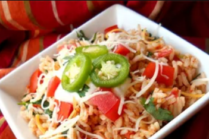

Mexican Rice with Bell Pepper

Ingredients:
- 1 tablespoon vegetable oil
- 1 cup long grain white rice
- 1 ½ cups chicken broth
- 1 tomato, seeded and chopped
- ½ onion, finely chopped
- ½ green bell pepper, finely chopped
- 1 fresh jalapeno pepper, chopped
- ½ cup chopped fresh cilantro
- 1 cube chicken bouillon
- 1 clove garlic, halved
- ½ teaspoon ground cumin
- salt and pepper to taste
Steps:
- Heat oil in a medium saucepan over medium heat. Add rice; cook and stir for 3 minutes. Pour in chicken broth
and bring to a boil.
- Stir in tomato, onion, bell pepper, and jalapeño. Add cilantro, bouillon, garlic, cumin, salt, and pepper;
bring to a boil. Cover, reduce the heat to low, and simmer until rice is tender and all liquid has been
absorbed, about 20 minutes.